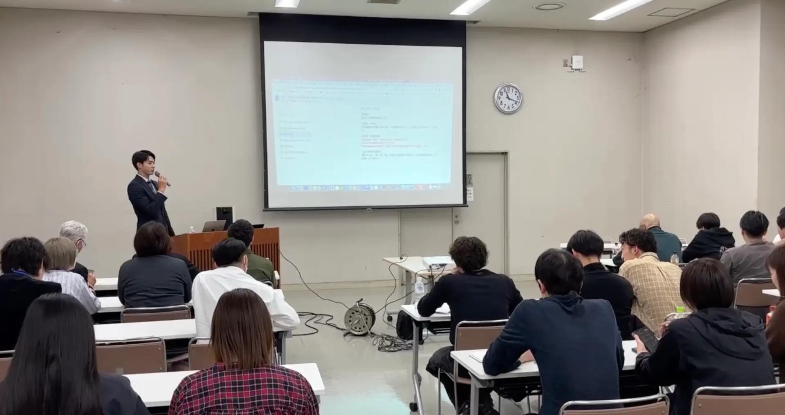
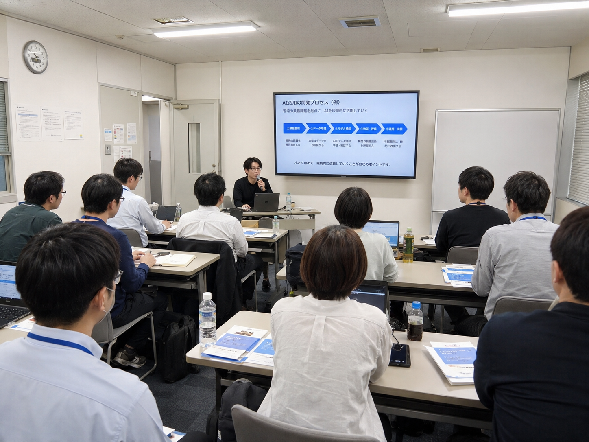

現場の課題
どの工程でAIを使えば効果的か分からない。試してはいるが、属人化して再現性がない。チームへの展開方法が定まっていない。
"受託開発 / SIer / SES企業の経営者 / CTO / 開発責任者向け
貴社に合わせたAI開発研修をご提案します。単なるツール紹介ではなく、AIを組み込んだ開発プロセスの設計・運用・改善まで、実際の開発現場で得た実践ノウハウをお伝えします。
ご相談内容をもとに、研修構成の概要案を無料でお渡しします
オンライン30分・相談無料。研修内容が未確定でもご相談いただけます。
受託開発において、品質・セキュリティ・説明責任を満たしながらAIを活用するには、
ツール個別の使い方ではなく、開発プロセス全体の設計が必要です。
どの工程でAIを使えば効果的か分からない。試してはいるが、属人化して再現性がない。チームへの展開方法が定まっていない。
生成されたコードの品質にばらつきがある。レビューやテストの基準が曖昧。納品品質と説明責任に不安が残る。
情報漏えいやセキュリティリスクが心配。顧客への説明や合意形成が難しい。社内ルールや教育が追いついていない。
Claude Code / Codex / Claude 等の活用を組み込み
| 比較項目 | ツール操作を中心とした研修 | 本研修 |
|---|---|---|
| 主目的 | ツールの使い方を知ること | 顧客案件で安全に成果を出すこと |
| 対象工程 | 一部の工程（実装中心） | 要件定義〜実装〜レビュー〜テスト〜PRまで全工程 |
| 品質 | プロンプトや個人の確認に依存しやすい | 品質基準・レビュー・テストまで含めて管理 |
| セキュリティ | 一般的な注意事項の説明が中心 | 機密情報の扱い・社内ルール・説明責任まで実践 |
| 最終判断 | 各自の判断に委ねられる | 人が判断と責任を持ち、自社で導入可否と進め方を決められる |
0 - 10分
開発体制・AI活用状況・お困りごとを伺います
10 - 20分
効果が出やすい工程と品質・セキュリティの考え方を整理
20 - 30分
貴社に合う研修構成・進め方のたたき台をご提案
※無理な売り込みは行いません。研修のご発注を前提としないご相談も歓迎です。
相談特典
研修構成案（たたき台）
ご相談内容をもとに作成し、無料でお渡しします
（ご相談者限定）


渡邉 浩平 / Kohei Watanabe
株式会社クラウドネイチャー 代表取締役
新潟のIT企業でキャリアをスタートし、その後フリーランスエンジニアとして数十万人が毎日使うサービスの開発や大手企業のシステム構築に携わる。約8年の開発経験をもとに、2026年4月に株式会社クラウドネイチャーを設立。AI見積もりSaaS「ミツモリAI」をはじめとする自社プロダクト開発、受託システム開発、企業向けAI研修・セミナー登壇を手がける。
| 内容 | 開発現場で使えるAI研修の個別相談 |
|---|---|
| 形式 | オンライン（Zoom） |
| 所要時間 | 30分 |
| 費用 | 無料 |
| ご相談対象 | 経営者 / CTO / 開発責任者 / 研修ご担当者 |
| 研修の受講対象 | エンジニア / PM / テックリード |
| ご準備 | 不要（現状の共有だけで構いません） |
| 担当 | 株式会社クラウドネイチャー（CloudNature Co., Ltd.） |
特にありません。現状の開発体制やお困りごとを口頭で共有いただくだけで構いません。
はい。導入前の情報収集の段階でもご相談いただけます。無理のない始め方からご提案します。
いいえ。比較検討段階の情報収集としてもご利用いただけます。研修内容が未確定の状態でのご相談も歓迎です。
同業の研修・セミナー事業を運営される方のご相談はお断りする場合があります。
オンライン30分・相談無料。入力約1分。送信後、担当より日程調整のご連絡を差し上げます。